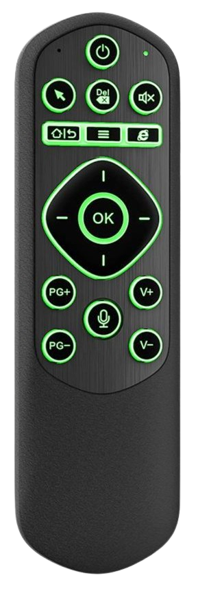
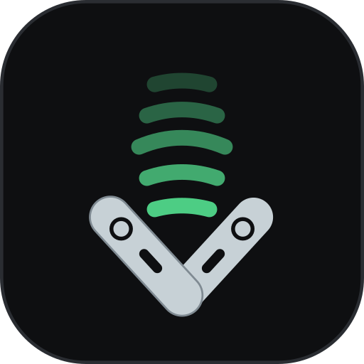
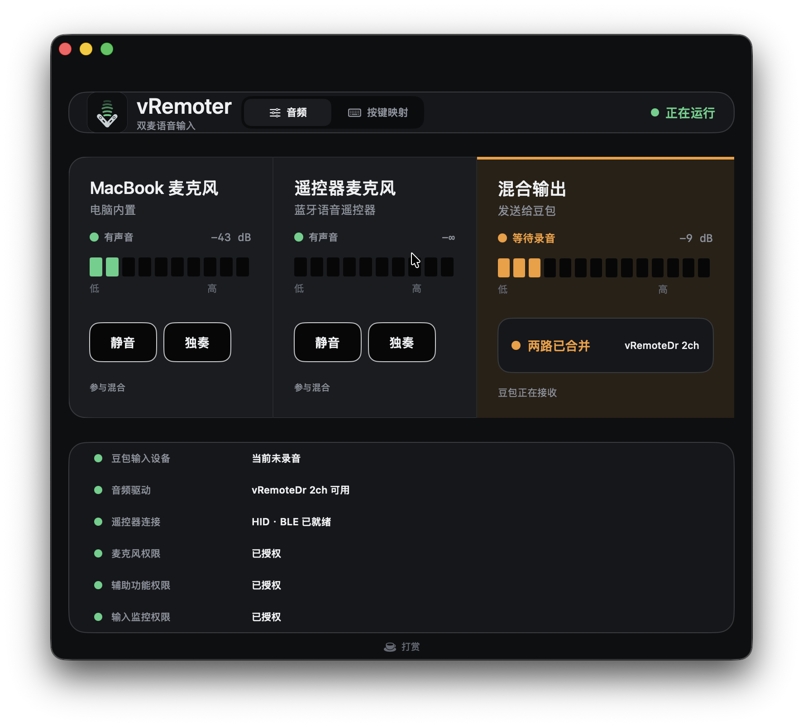
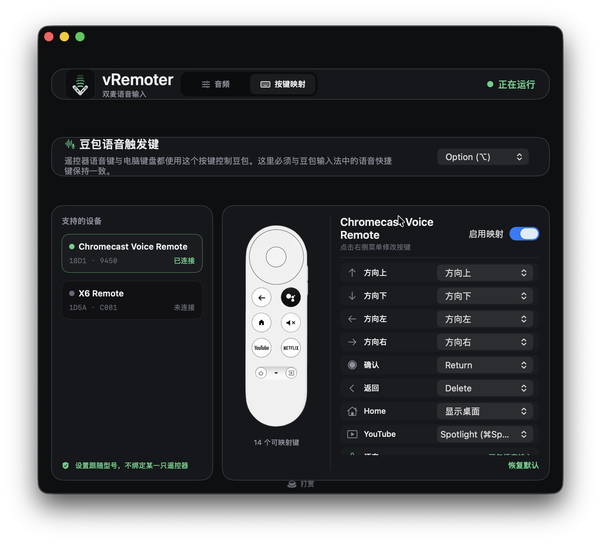
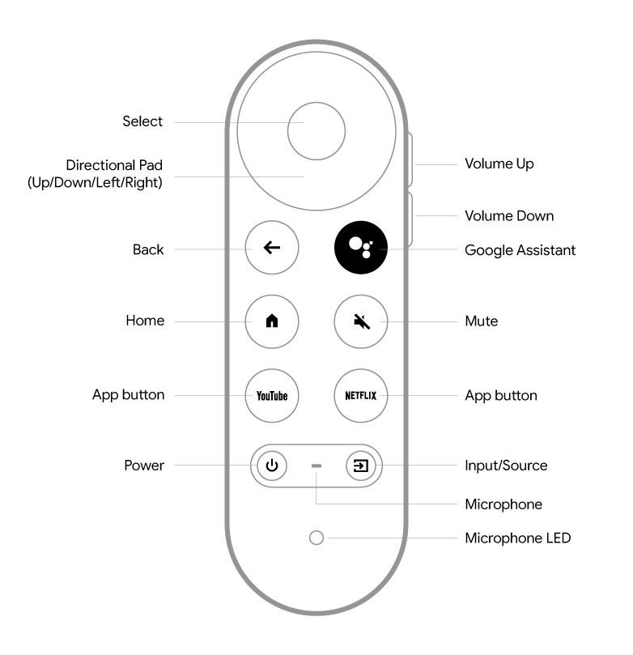
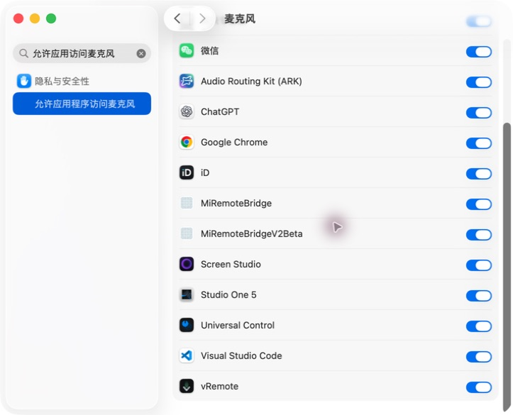
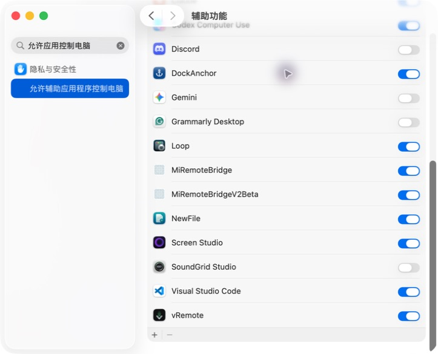
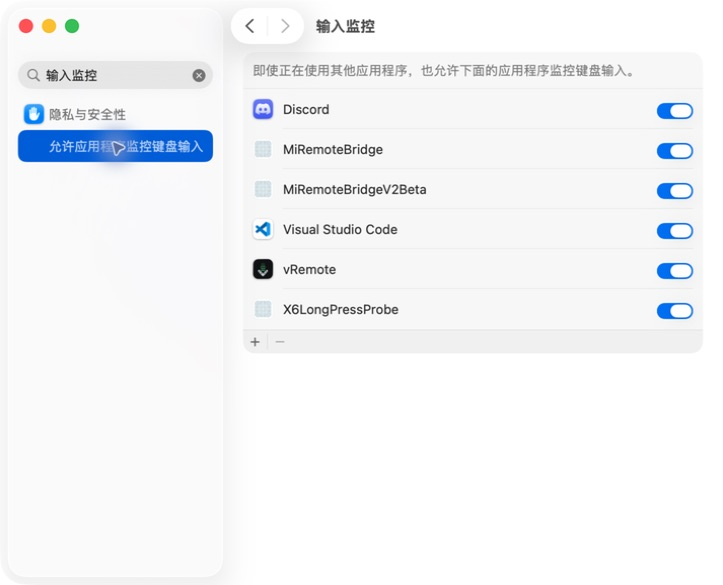
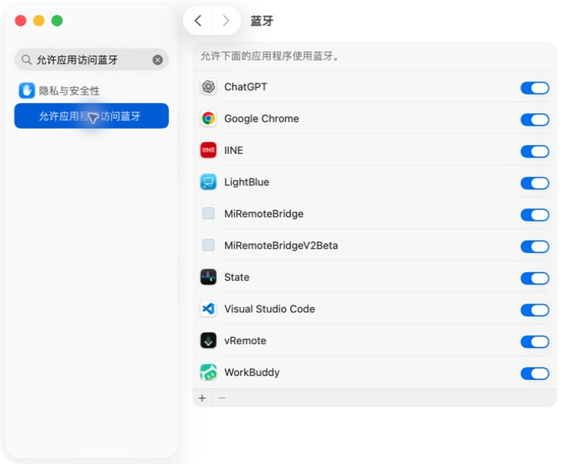
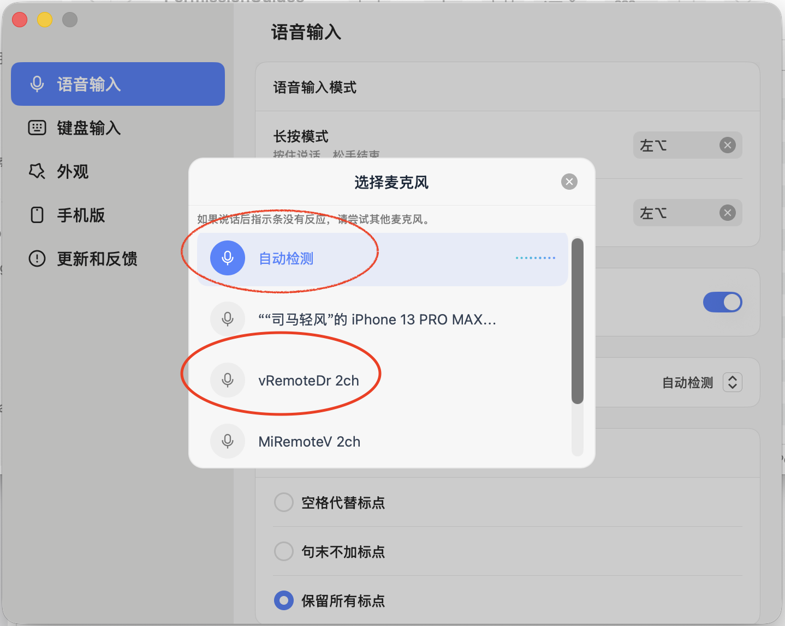

X6 Remote
小米出品的那支
能语音、能当麦克风，正面按键和背面键盘鼠标都能透传
vRemotervRemoter 1.1.1 · macOS
手边的 X6 或 Chromecast Voice Remote，接上就能当你麦用——说话不用再凑近笔记本。顺手把电视上那些遥控键，换成你在 Mac 上真正想按的那几个。
适用于 macOS 12 及以上版本，目前主要配合豆包输入法使用。

1.1.1 新功能
方向、确认、返回、Home、音量这些常用键都能自己指定。YouTube、Netflix、信源这类遥控器专属键，也能换成打开 App、切窗口、 Spotlight 搜索——你想让它做什么，就是什么。

支持哪些遥控器
两支可以同时连着，谁在说话就用谁。两支型号各自保存设置，不会互相覆盖。

小米出品的那支
能语音、能当麦克风，正面按键和背面键盘鼠标都能透传
Google 出品的那支
短按切换开关、长按按住说话，整套按键都能映射目前实测可用的是上面这两支：X6 Remote 和 Chromecast Voice Remote。其他型号的 Chromecast 遥控器没有验证过，不保证能用。X6 上切换鼠标/触控板的那个键由遥控器自己处理，vRemoter 不介入。
硬件标识：X6 为 VID 1D5A / PID C081，Chromecast Voice Remote 为 VID 18D1 / PID 9450。
说话就行
vRemoter 把遥控器和 MacBook 的麦克风合成一路输入，豆包那边只会看到一支麦克风。触发键默认是 Option，手顺的话，换成 Command、Control、Shift、Fn 都行。
不用一直按着，想说完就说完。
长句、连续说，都比较顺手。
在电脑前用键盘，在沙发上用遥控器，随时切。
上手
macOS 缺的权限，vRemoter 会直接点进对应的设置页，不用你满屏找。豆包那边选麦克风也有单独向导。





支持开发